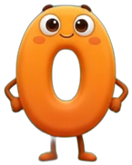
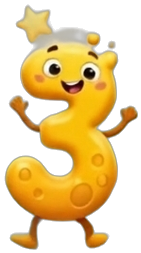
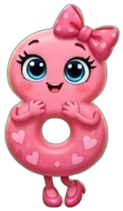

창의적으로 수를 펼치다 🪄
수를 가지고 놀며 사고하는 과정을 배우는, 수를 정복하기 위한 DOCSSAM의 철학입니다. 학교 시험은 틀리기 쉬운 문제로 변별합니다. 대부분의 학원은 유형을 외워 답을 맞히는 법을 가르치죠. Numbers of Magic은 다릅니다 — 어려운 수를 내가 다루기 쉬운 수로 펼쳐서 나에게 맞추어 계산하는 힘을 키웁니다.
세로셈으로 받아내림하다 실수. 답은 구해도 원리는 모름. 유형이 바뀌면 무너집니다.
수의 규칙을 이용해 재구성. 실수가 줄고, 수에 대한 창의성과 자신감이 자랍니다.
단어와 문법(공식)을 외우기만 해서는 언어를 자유자재로 구사할 수 없습니다. 숫자라는 언어도 마찬가지예요. 수를 내 마음대로 활용할 수 있어야 진짜 수학입니다. 그래서 우리는 한 문제를 여러 방법으로 풀어봅니다 — 답은 하나지만 길은 여러 개.
초급의 "수를 나누어 더하기"가 훗날 분배법칙 그 자체입니다. 오늘의 작은 원리가 중·고등 수학의 뿌리가 됩니다.


